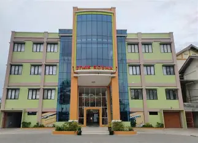
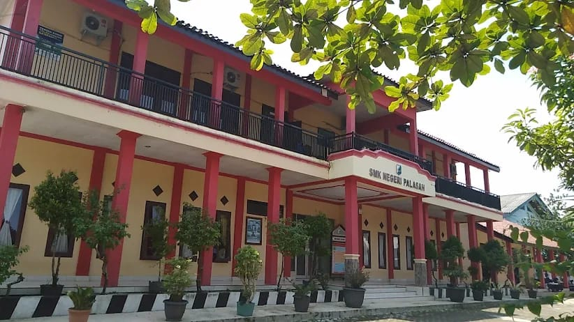
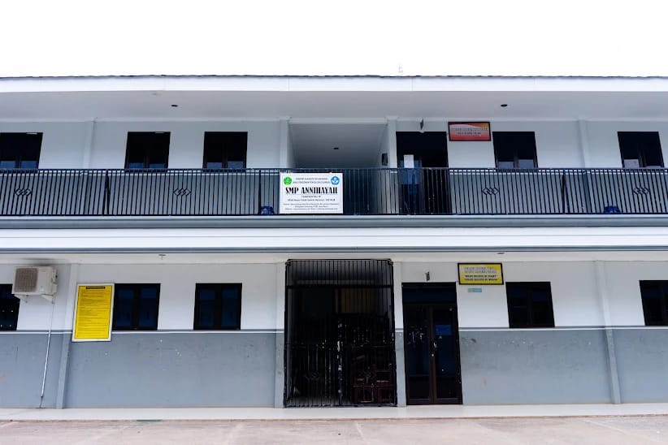
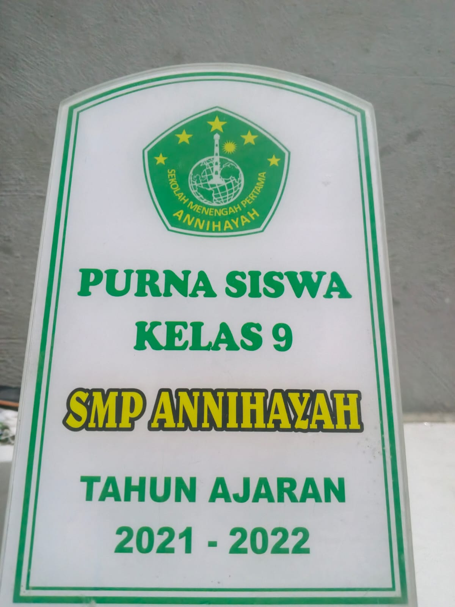
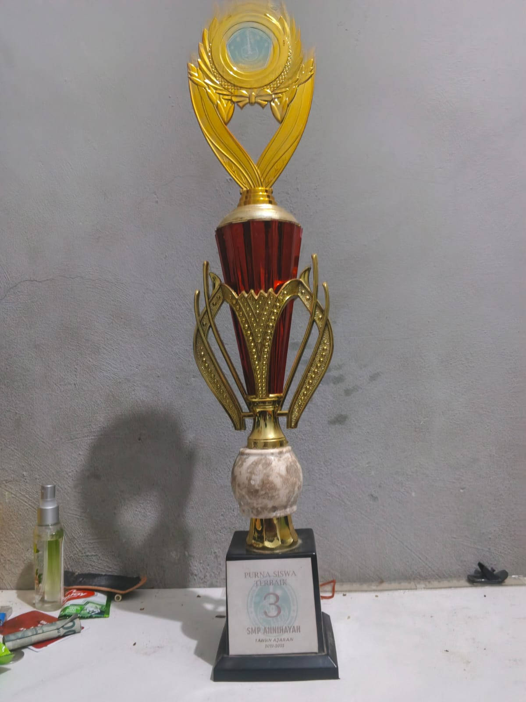
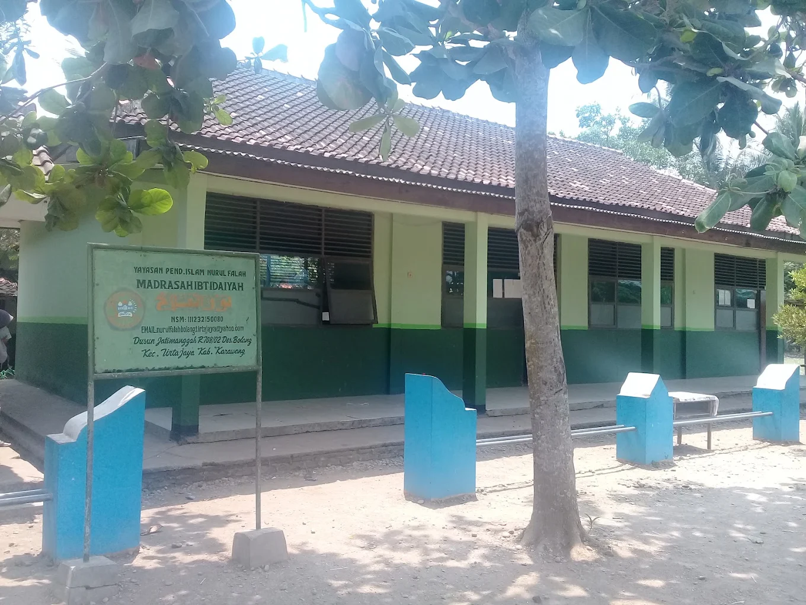

Riwayat Pendidikan
Berikut adalah riwayat pendidikan formal yang telah dan sedang saya tempuh:
STMIK Rosma
2025 - Sekarang
Jenjang: Perguruan Tinggi / S1 Teknik Informatika (Mahasiswa Aktif)
NIM: 202501251007
Menempuh studi sarjana dengan fokus pembelajaran pada logika dan algoritma pemrograman, struktur basis data, web programing dan mobile programing.
SMK Palasah
2022 - 2025
Jenjang: Sekolah Menengah Kejuruan (SMK)
SMP Annihayah
2019 - 2022
Jenjang: Sekolah Menengah Pertama (SMP)


MI Nurul Falah
2013 - 2019
Jenjang: Madrasah Ibtidaiyah (Tingkat Dasar)